Sumit ❤️ Sweety
19 January 2026 — Forever Began
Our First Chapter Together
The Day Everything Changed
✨ 19 January 2026
Some dates pass quietly. Others become a permanent part of your story. For me, this was one of those dates.
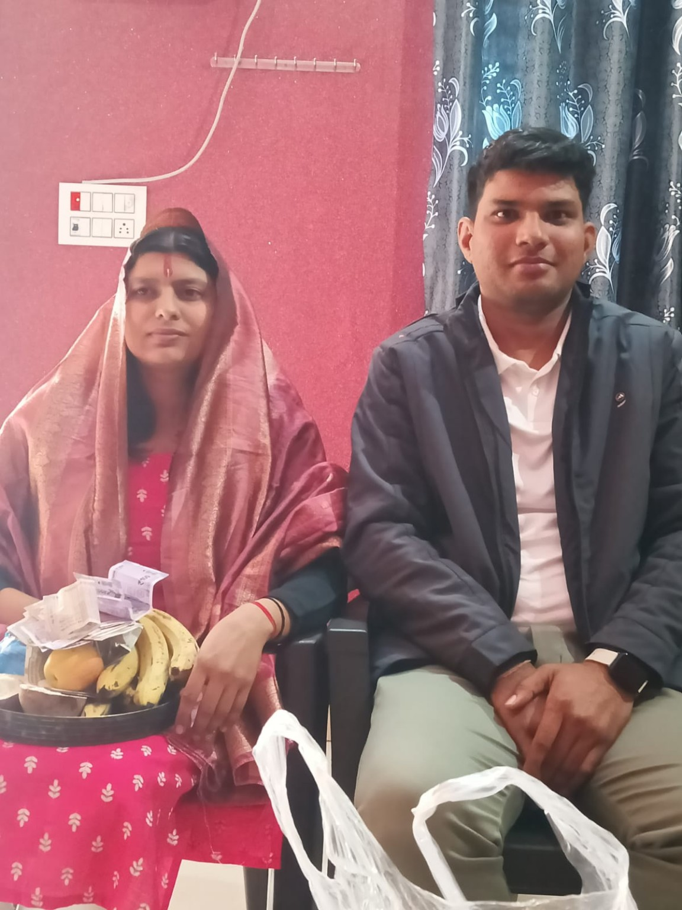
"The day our story officially began ❤️"
Every beautiful story has a beginning. Ours started with a promise.
19 January 2026 wasn't just another date on a calendar. It was the day our families came together. The day a new journey officially began. Before this day, you were someone I knew about. After this day, you became someone I started thinking about every single day.
A New Chapter Began
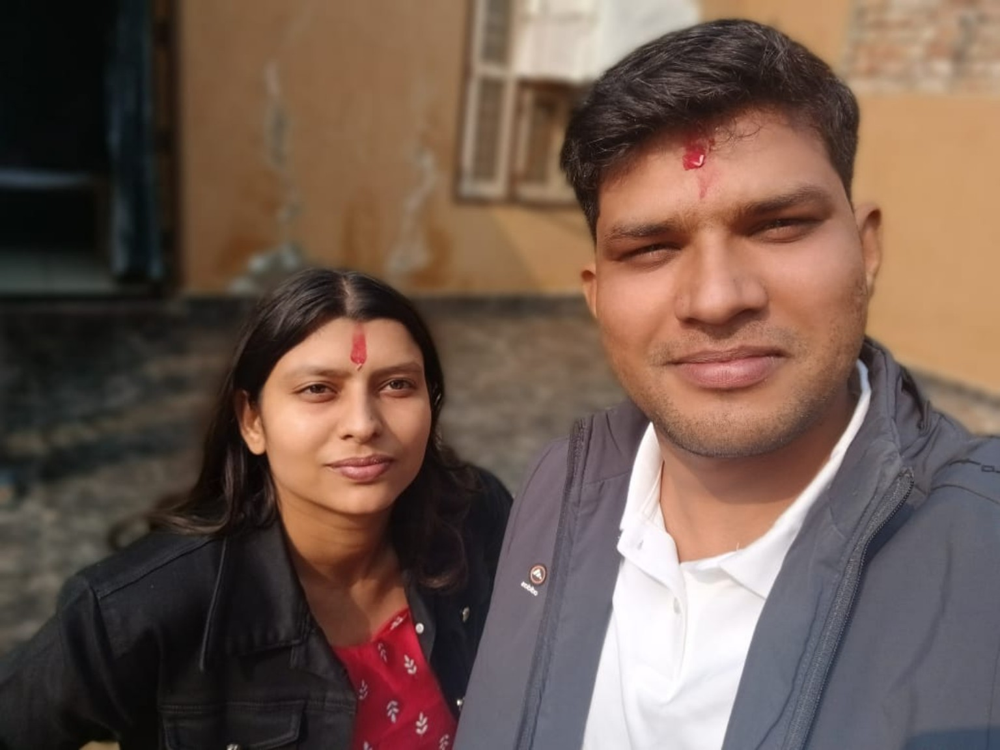
"A future that once felt distant suddenly became real."
Some moments change a day. Some moments change a lifetime.
Somewhere between that day and the next, you quietly became a daily thought. Life has a strange way of changing direction. Sometimes it happens slowly. Sometimes it happens in a single moment. Looking back now, I think this was one of those moments.
The First Promise
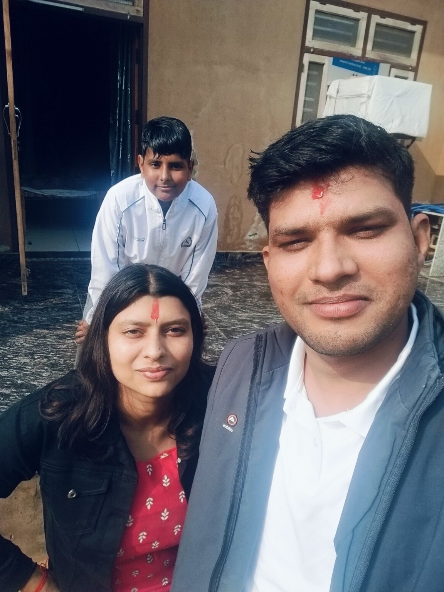
"The first page of our forever."
Some promises are spoken. Others are quietly written by destiny.
Every story begins somewhere. Looking back, I think this was ours. There were still conversations waiting to happen. Memories waiting to be created. Meetings waiting to happen. And countless beautiful moments still hidden in the future. But this was where everything started. The first page. The first promise. The beginning of us.
End of Chapter One
The Day We Finally Met
❤️ 15 May 2026
Some moments stay with you forever. This was one of them.
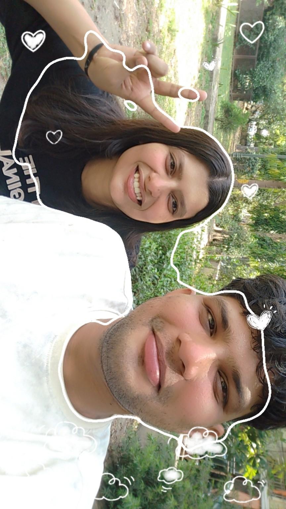
"The journey felt shorter than the excitement."
Before this day, you were a voice, a smile, and a name that already mattered.
For weeks I had imagined this moment. What would we talk about? Would it feel awkward? Would it feel natural? The answers arrived the moment I saw you.
The First Moment
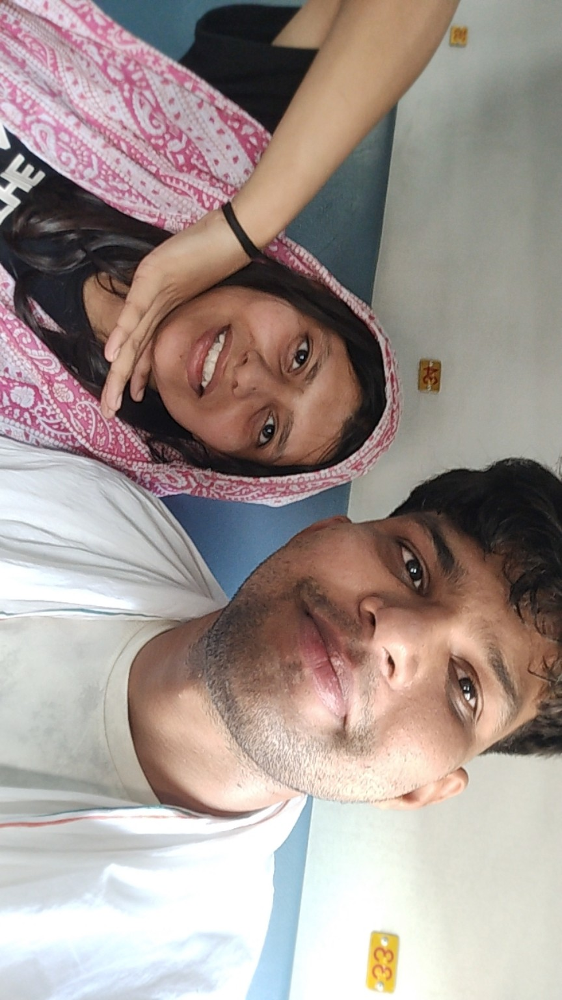
"And suddenly, there you were."
Some people feel familiar from the very first moment.
Not through a screen. Not through photographs. Not through calls. Standing right in front of me. Real. Beautiful. And somehow exactly as I imagined.
The Conversations
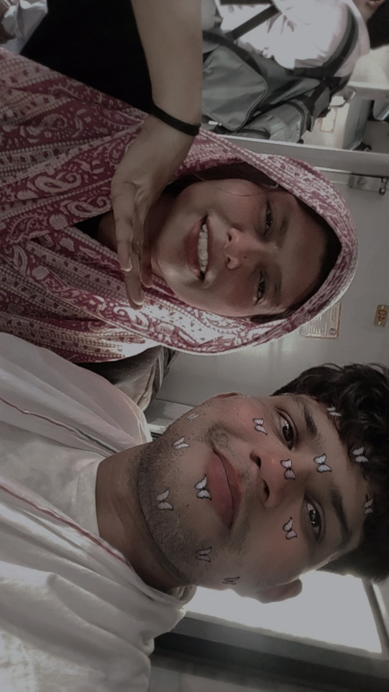
"The easiest conversations are the ones that feel effortless."
The best part of the day wasn't where we were. It wasn't what we did. It was how easy everything felt. Every conversation felt natural. Every smile felt genuine.
A Memory Worth Keeping
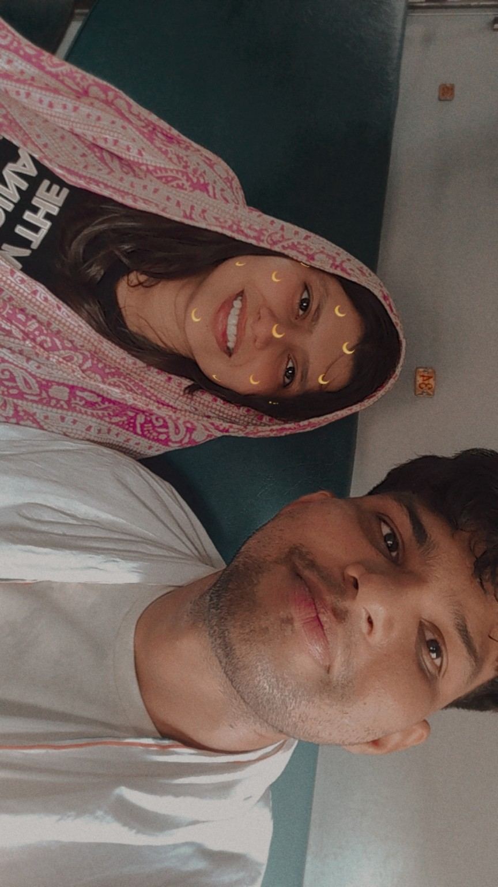
"A day that became one of my favourite memories."
Some days become memories. Some memories become favourites.
When the day ended, I realised something. The wait had been worth it. Because some meetings aren't just meetings. They become memories that stay forever.
End of Chapter Two
The Girl Behind My Favourite Smile
❤️ A Chapter Just For You
If someone ever asked me why I chose you, this chapter would be my answer.
The Smile That Stayed
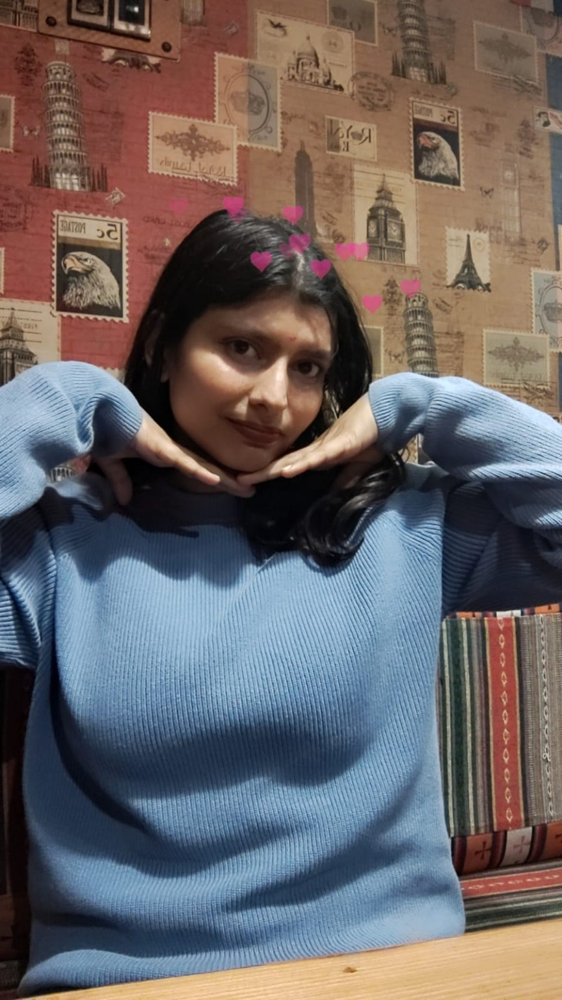
"Some smiles stay longer than moments."
There are smiles you notice. And then there are smiles you remember. Yours somehow became both. I don't know exactly when it happened. Maybe during one of our conversations. Maybe during one of our meetings. Or maybe the very first time I saw you. But somewhere along the way, your smile became my favourite. The kind of smile that stays in your mind long after the moment is gone. The kind that can turn an ordinary day into a better one. Even today, whenever I think of you, that's one of the first things that comes to mind. And somehow, it still makes me smile too.
The Kind Heart
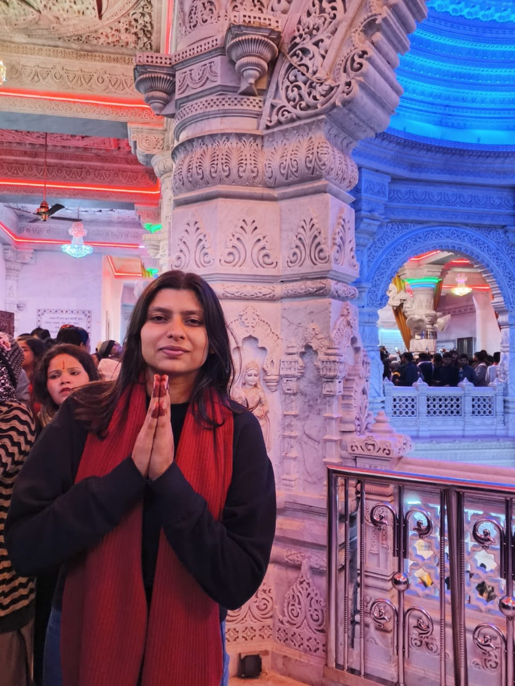
"Kindness is a beauty that never fades."
People often notice beauty first. And yes, you are beautiful. But what made me fall for you was something deeper. It was your heart. The way you care about people. The way you remember small things. The way you worry when someone isn't okay. The way you put others before yourself without even realizing it. Those are the things that made me admire you. And every day, they make me admire you even more. Your kindness is one of the many reasons I feel lucky to have you.
The Comfort
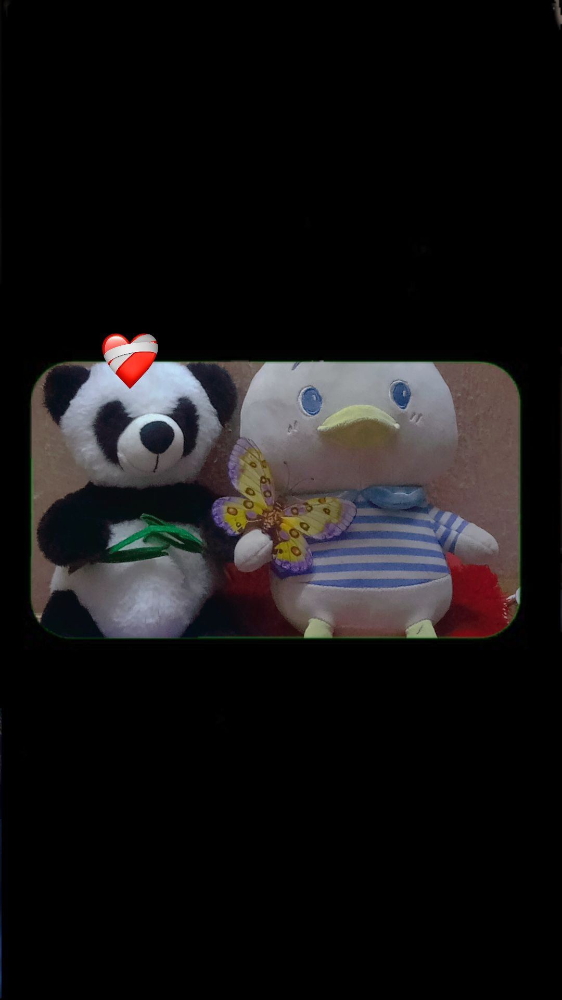
"Some people simply feel like home."
Some people make places feel comfortable. You make people feel comfortable. With you, conversations never feel forced. Silence never feels awkward. And time somehow passes faster than it should. There is a calmness in your presence that is difficult to explain. The kind of comfort that doesn't need words. The kind that simply makes everything feel right. And that is one of the reasons I know I found my person. Home isn't a place anymore. It feels like you.
My Favourite View
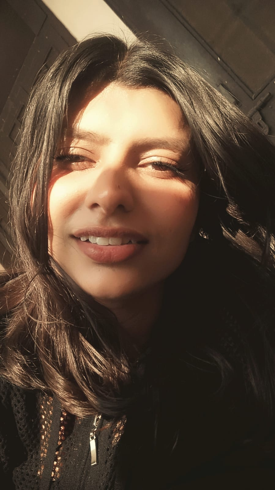
"My favourite view has always been you."
If someone asked me what my favourite view is, I wouldn't choose mountains. I wouldn't choose beaches. I wouldn't choose sunsets. Because beautiful things are everywhere. But you are different. You have a way of making even ordinary moments feel special. And somehow, every picture of you becomes my favourite one. Not because of the picture itself. But because you're in it. My favourite view has never been a place. It's always been you.
The Reason
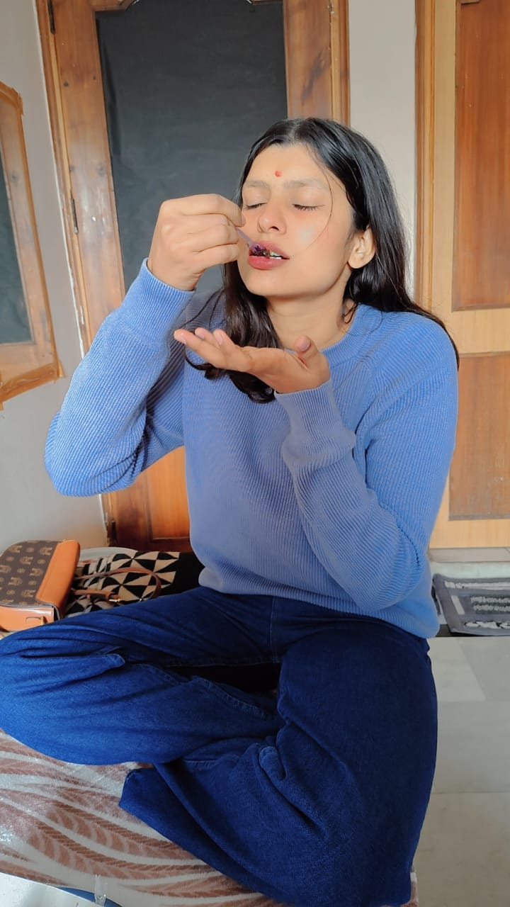
"It's not one thing. It's everything."
If someone ever asked me, "Why her?" I don't think I could answer in a single sentence. Because it isn't one thing. It's a hundred little things. The way you smile. The way you care. The way you listen. The way you make me feel understood. The way you make difficult days easier. The way you make good days even better. You didn't become important to me because of one moment. You became important to me because of all of them. And if I had to choose again, I would still choose you.
End of Chapter Three
The Future I Imagine With You
❤️ The Best Chapters Are Yet To Come
This chapter isn't about our past. It's about everything I hope we'll build together.
The Little Things
When I think about our future, I don't think about perfect days. I think about ordinary moments. Bringing you your favourite chocolates. Surprising you with cake for no reason. 🍦 Late-night ice cream dates. Random drives without a destination. Laughing over things that make absolutely no sense. Listening to your stories after a long day. Those are the moments I look forward to most.
Because happiness is usually hidden inside the smallest moments.The Adventures Waiting Ahead
There are still places we haven't visited. Restaurants we haven't tried. Photos we haven't taken. Desserts we haven't argued about. Memories we haven't created. And stories we haven't lived yet. That's what excites me the most. Knowing that the journey is only beginning.
The best part isn't the destination. It's having you beside me.The Home We Will Build
The future I dream about isn't filled with luxury. It's filled with us. Quiet evenings. Shared laughter. Celebrating little victories. Supporting each other through difficult days. Creating traditions that belong only to us. Making ordinary days feel extraordinary simply because we're together.
Home isn't a place anymore. It's wherever you are.My Promise
I cannot promise that every day will be easy. I cannot promise that life will always go according to plan. But I can promise this. I will celebrate your happiest days. Stand beside you on the difficult ones. Bring chocolates when you're upset. Find ice cream when you're craving it. Make you laugh when you're stressed. And remind you every day just how loved you are. Because no matter what life brings, you will never have to face it alone.
And through every chapter of life, I will choose you again and again.End of Chapter Four
10 Things I Love About You
❤️ Just A Few Of Many Reasons
If I tried to write every reason, this website would never end. But here are a few of my favourites.
1. Your Smile
Somehow it has the ability to make every day better. No matter how stressful the day is, seeing you smile always feels like a reset button.
2. Your Kind Heart
The way you care about people. The way you remember small things. The way you worry when someone isn't okay. That's something I truly admire.
3. Your Love For Chocolates
I've accepted that chocolates will always have a special place in your heart. And honestly? I think it's adorable.
4. Your Love For Cakes
Any celebration instantly becomes better when cake is involved. And somehow your excitement makes it even sweeter.
5. Your Ice Cream Obsession
Especially when it turns into a completely unplanned late-night ice cream mission.
🍦 Late-night ice cream dates will always be one of my favourite future plans.6. The Way You Listen
You don't just hear people. You listen. And that's a rare quality.
7. Your Laugh
Some sounds make a place feel happier. Your laugh is one of them.
8. Your Caring Nature
You always think about the people you love. Sometimes even more than yourself.
9. The Way You Make Me Feel
Comfortable. Understood. Appreciated. Loved. Those feelings are priceless.
10. Simply You
If someone asked me for the biggest reason, I wouldn't choose just one. Because it isn't one thing. It's everything. It's simply you.
And that's why, in every lifetime, I would still choose you.End of Chapter Five
Why I Love You
Tap the button whenever you need a reminder. ❤️
Because your eyes… they don't just look beautiful, they hold me there a second longer than I expect, every single time.
Countdown To Our Wedding ❤️
Days
Hours
Minutes
Seconds
To The Girl Who Became My Favourite Story ❤️
Dear Sweety,
When this story began, we were two people connected by a promise. Then came conversations. Then came memories. Then came moments that slowly became chapters. And somewhere along the way, you became one of the most important parts of my life.
This website holds a few memories. A few photographs. A few feelings. A few dreams. But it could never fully capture what you mean to me. Because some things are simply too special to fit into words.
Thank you for every smile. Every conversation. Every laugh. Every memory. Every moment that made an ordinary day feel extraordinary. Thank you for being patient. Thank you for being caring. Thank you for being exactly who you are.
When I think about our future, I don't think about perfect days. I think about us. Sharing chocolates. Arguing over which cake is better. Going on late-night ice cream dates. Taking random photos. Creating inside jokes. And building a lifetime of memories together.
The truth is simple. You make good days better. You make difficult days easier. And you make the future something I genuinely look forward to.
And if life gave me another chance, I would still choose you. Every time. Every lifetime.
❤️
Forever Yours,
Sumit
✨ You made it to the end ✨